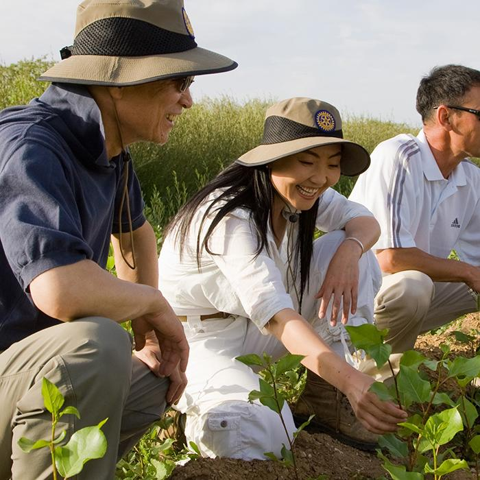
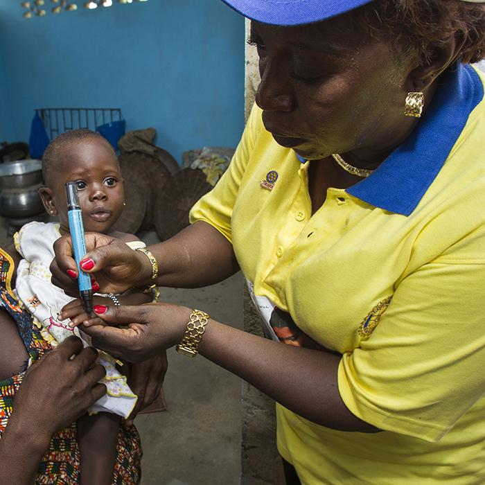

O Rotary é uma rede global formada por mais de 1,2 milhão de líderes comunitários, amigos e
vizinhos que veem um mundo onde as pessoas se unem e entram em ação para causar mudanças
duradouras em si mesmas, nas suas comunidades e no mundo todo.
Para resolver problemas reais, é preciso compromisso, visão e pessoas que entram em ação. Com
dedicação, energia e inteligência, nossos associados ajudam a humanidade há mais de 110 anos.
Por meio de projetos sustentáveis em diversas áreas, como alfabetização, paz, saúde e recursos
hídricos, estamos sempre procurando maneiras de criar um mundo melhor.
Nossa missão
A Missão do Rotary International é servir ao próximo, difundir a integridade e promover a boa
vontade, paz e compreensão mundial por meio da consolidação de boas relações entre líderes
profissionais, empresariais e comunitários.
Declaração de visão do Rotary
Juntos, vemos um mundo onde as pessoas se unem e entram em ação para causar mudanças duradouras
em si mesmas, nas suas comunidades e no mundo todo.

Fortalecemos comunidades:
Colaboramos com líderes comunitários para realizar projetos que tenham impacto real e duradouro na vida das
pessoas.
Trabalhamos de forma diferenciada
Vemos as coisas de forma diferente: nossa perspectiva multidisciplinar nos ajuda a enxergar os
desafios de uma maneira singular.
Pensamos de forma diferente: aplicamos nossa liderança e experiência para resolver problemas
sociais e encontramos soluções excepcionais.
Agimos com responsabilidade: nossa dedicação e perseverança criam mudanças duradouras.
Fazemos a diferença local e globalmente: nossos associados podem ser encontrados nos quatro
cantos do mundo.

Somos pessoas em ação:
Conectamos pessoas de perspectivas diferentes para trocar ideias, fazer amizades e, acima de tudo, transformar o mundo.
Diversidade, Equidade e Inclusão
Como uma rede global dedicada à construção de um mundo onde as pessoas se unem e entram em ação
para causar mudanças duradouras, o Rotary valoriza a diversidade e celebra contribuições de
seres humanos de todas as origens, independentemente de idade, etnia, raça, cor, habilidade,
religião, status socioeconômico, cultura, sexo, orientação sexual ou identidade de gênero.

Solucionamos problemas:
Usando nossa experiência profissional e compromisso pessoal, buscamos soluções inovadoras para garantir a saúde,
estabilidade e prosperidade de comunidades em todo o globo.
Os Quatro Princípios do Rotary
1. É a verdade?
2. É justo para todos os interessados?
3. Criará boa vontade e melhores amizades?
4. Será benéfico para todos os interessados?